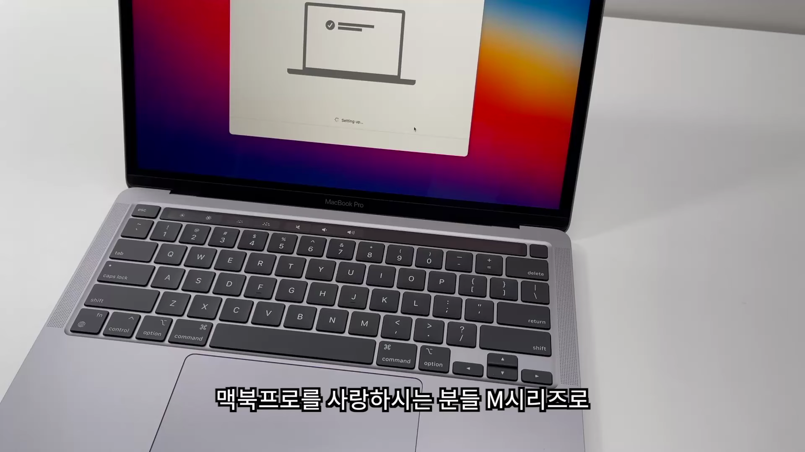
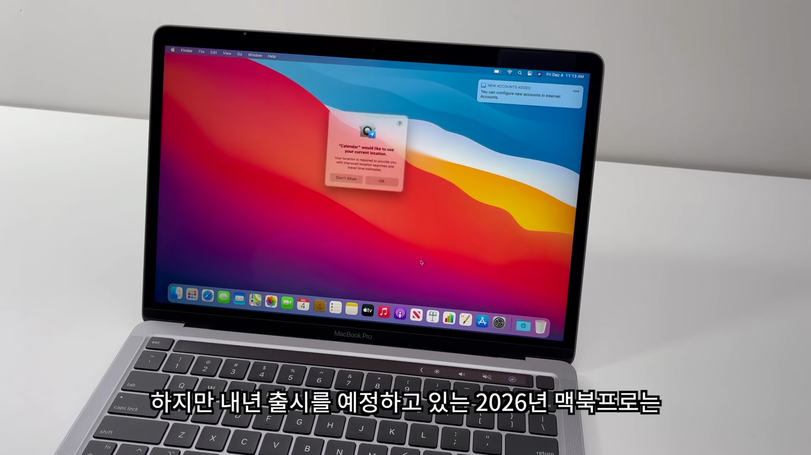
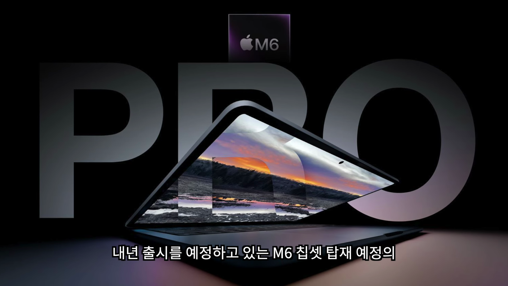
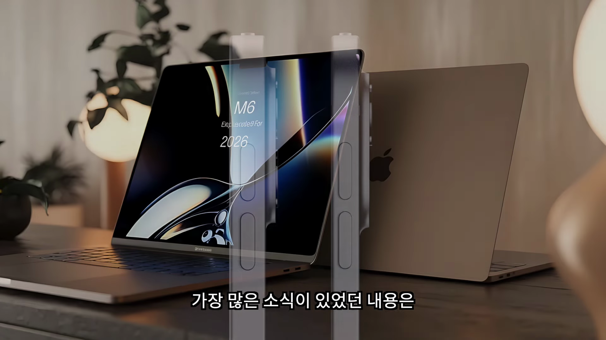
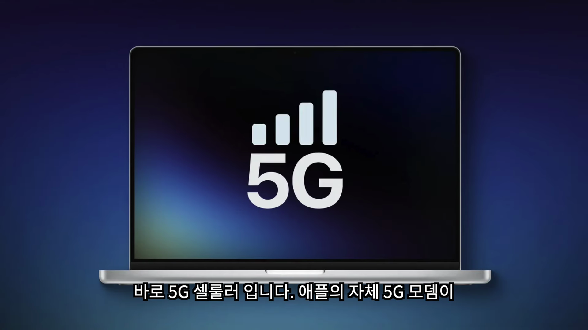

2026년 출시 예정인 신형 맥북프로에 대한 여러 가지 흥미로운 소식과 기대되는 혁신을 살펴보겠습니다. 다양한 성능 향상과 디자인 변화에 대해 알아보세요. 
M시리즈와 맥북프로 업그레이드
- M시리즈로 업그레이드한 사용자 신모델 반응
- 2026년 맥북프로의 출시 여부
- 빠른 성능에 대한 기대감
맥북프로를 사랑하는 이들, M시리즈로 업그레이드했다면 새로운 모델에 대한 성능은 크게 관심이 없을 수 있습니다.

2026년 맥북프로에 대한 기대
- 가장 큰 업그레이드 예고
- 디자인 변화 주목
- 더 얇고 가벼운 디자인
내년 출시 예정인 2026년 맥북프로는 기대되는 큰 변화가 예고되고 있으며, 더 얇고 가벼운 디자인으로 다가올 것입니다.

디자인 변화
- 가벼워지는 맥북프로
- 애플 실리콘 칩의 전력 효율성
- 디자인 변화 기대감
2026년 맥북프로는 1mm의 작은 변화로도 큰 효과를 가져올 것으로 예상됩니다.

디스플레이 변화
- OLED 디스플레이 탑재
- 다이나믹 아일랜드 디자인 가능성
- 미니멀한 카메라 홀 예상
2026년 맥북프로는 OLED 디스플레이가 탑재되고, 새로운 카메라 디자인으로 시장의 이목을 끌 것입니다.
차세대 M5 칩과 M6 칩 전망
- M5 칩 생산 시작
- M6 칩에 대한 기대
- AI 성능 강화 기대
M5 칩의 대량 생산 소식과 함께, M6 칩에 대한 기대도 커지고 있으며, AI 성능 강화가 예상됩니다.

5G 셀룰러 기능의 도입 가능성
- 애플의 자체 5G 모뎀
- 맥북프로에서의 활용 가능성
- 기능 중첩 조율 필요성
2026년 맥북프로에 5G 셀룰러 기능이 탑재될 것으로 보이며, 이를 아이폰 및 아이패드와의 관계에서 어떻게 조율할지가 중요할 것입니다.
Tags: #맥북프로 #2026년 출시 #M6 칩셋 #디스플레이 변화 #OLED #5G 기능 #애플 실리콘 #디자인 변화 #전력 효율성 #AI 성능 강화